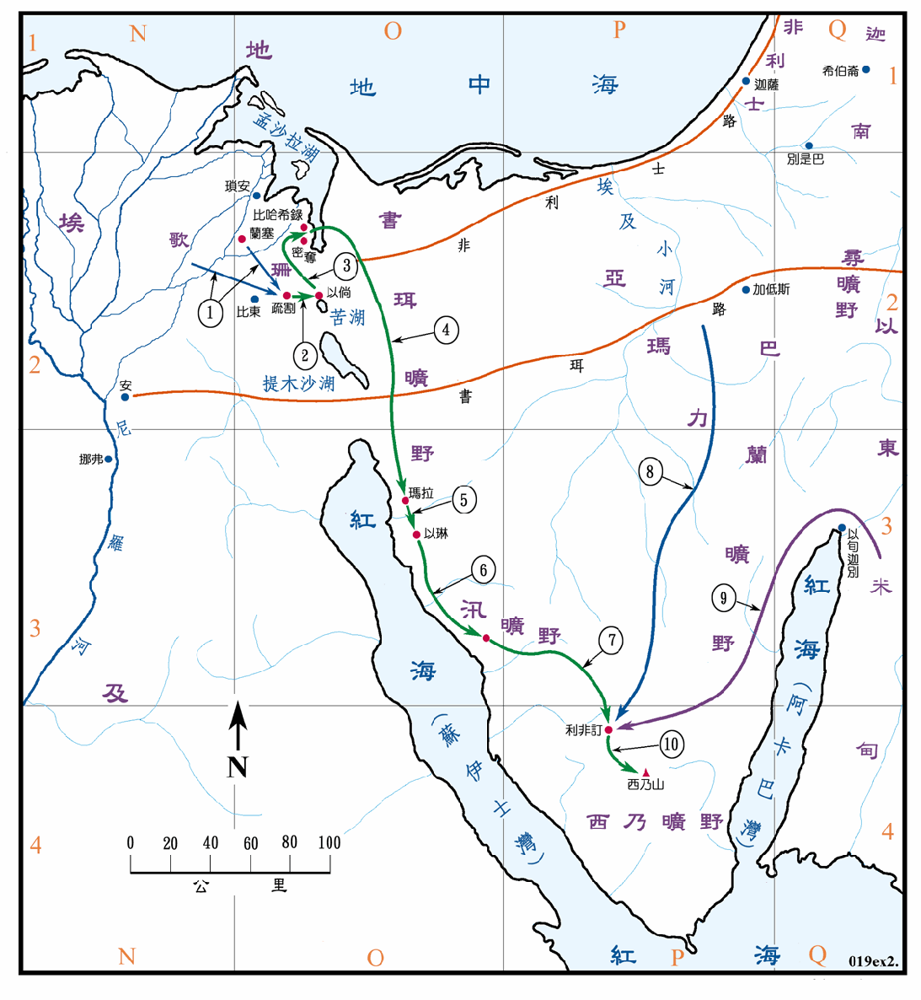

1446BC

行动线说明
| 序号 | 圣经 | 说明 |
|---|---|---|
| 1 | 出12:37 | 以色列人从兰塞起行往疏割去。 |
| 2 | 出13:20 | 从疏割起行到以倘安营。 |
| 3 | 出14:2 | 以色列人转回，在比哈希录前、密夺和海的中间，对着巴力洗分安营。 |
| 4 | 出14:21-22，15:20 | 以色列人过海，又在旷野中走了三天，到了玛拉。 |
| 5 | 出15:27 | 从玛拉到以琳。 |
| 6 | 出16:1 | 从以琳到汛的旷野。 |
| 7 | 出17:1 | 从汛到利非订安营。 |
| 8 | 出17:8-16 | 亚玛力人来攻击以色列人，但被击败。 |
| 9 | 出18:1-5 | 摩西的岳父带了摩西的妻子和两个儿子从米甸前来。 |
| 10 | 出19:1 | 以色列人从利非订到了西乃的旷野。 |
| 出20章至31章 | 传十诫。 |
摩西於1486BC 逃亡去米甸后不久，哈雪苏去世，由杜得模西士三世 (1482～1450BC) 正式主政，当年想要杀摩西的可能就是他。他在军事方面，经过十八次的战役，将势力扩展到叙利亚，直到幼发拉底河，他的军队穿越巴勒斯坦，船只渡过地中海而到达腓尼基海岸。他的第一次战役是他战胜迦南诸王，这是一次决定性的胜利，这次战役是靠近米吉多，打败了集结在基低斯的喜克索人。此后三个世纪中，巴勒斯坦成为埃及的一省，迦萨、约帕、伯善、乌力兹诸城都已成为埃及的基地。但是埃及人并未干涉其他迦南城市国家的国际结构，只是要他们接受埃及的权势，向埃及纳贡，防护经过他们境内的道路，供应战车，提供埃及军队之辅助部队、食物及其他补给品等等。当埃及强盛之时，这种形式的统治相当的有效，一旦埃及内部有了问题，这个制度就会崩溃。由於战事都是在夏天进行，在冬季则进行大规模的建 工程，主要的有方尖石碑的亚孟神庙。
待摩西从米甸回到埃及，要领以色列人出埃及 (1446BC) 的时候，当时的法老是亚门侯提二世 (1450～1424BC)，他为了平定迦南地的暴乱，曾两次发动战役，第一次是镇压加利利南部的示玛，并且军队一直到达了幼发拉底河边，但未成功的入侵美坦尼。在南方则扩张领土到了尼罗河第四瀑布附近的拿巴达。当时埃及的势力到达顶峰，所以摩西要求他让以色列人出埃及一事，实在是在向他盖世的权威挑战，自是非常的困难。
待法老王准许以色列人离开埃及，以色列人就从歌珊地，也就是兰塞地向疏割结集，先到以倘，再转向北到北部的一处海边安营。这一处的海实际上是地中海南岸的孟沙拉湖南方的一个湖汊，并不是红海，因为红海是在南方，现在学者都同意这是一个翻译上的错误，英文的 Red sea 应该是 Sea of Reed，就是芦苇海。红海的海水有盐分，不能生长芦苇，但孟沙拉湖的湖水是淡的，长有茂盛的芦苇。过海后经过书珥旷野和伊坦旷野，路上几个安营处的位置也有相当高的可信度，所以以色列人是在北部渡海，而不是在南方的苏伊士湾或红海渡海的。
出埃及的路线有几种不同的说法，传统上认为是沿红海的东岸南下，到西乃半岛南端的西乃山，然后再转向北行到加低斯。所以主要的活动地区是在西乃半岛。
西乃半岛位於红海的苏伊士湾和阿卡巴湾之间，几乎全是沙漠和崎岖陡峭的山岭，仅有少数的绿洲，至今仍少有居民。但是在埃及一些兴盛的时代中，特别是第十二、十八和十九王朝，这个半岛曾被视为埃及帝国的重要地区，或是极具价值的属地，他们在此大量采取铜、铁矿、蓝宝石等，极为成功，又从西部众多的石矿坑中采取埃及巨大建 和雕刻所需的花岗石和粉红片麻岩。所以此地区虽然不适人居住，却因采矿需大量人力，所以有些区域曾被高度的开发，同时也有良好的道路配合大量的运输。从圣经上看到，摩西在米甸的四十年中，曾到何烈山，就是西乃山下牧羊，他回埃及时，又取道经过西乃山，而且他的哥哥亚伦从埃及来迎接他时，也是在西乃山，他们行经的路线，与日后以色列人所走的路线十分接近，所以对埃及人和米甸人来说，西乃半岛都不是一处陌生的地方。